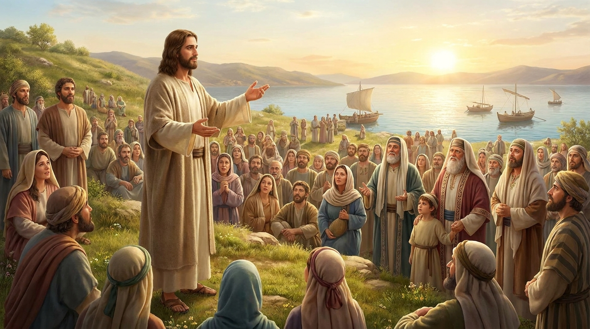

O Rei Prometido e o Seu Reino
O Evangelho de Mateus é a ponte perfeita entre o Antigo e o Novo Testamento. Escrito principalmente para um público judeu, o grande objetivo de Mateus é provar que Jesus de Nazaré é o Rei Messias prometido nas Escrituras. O livro é marcado por dezenas de citações do Antigo Testamento mostrando o cumprimento das profecias na vida de Jesus. Além de narrar os milagres, a morte e a ressurreição, Mateus foca intensamente nos ensinamentos de Jesus sobre como viver no "Reino dos Céus", agrupando Suas palavras em grandes blocos, sendo o mais famoso deles o Sermão do Monte.
Ficha Técnica
- Autor: Mateus (também conhecido como Levi), um ex-cobrador de impostos que se tornou um dos doze apóstolos.
- Tema Principal: Jesus como o Messias e Rei esperado, e os princípios e leis do Reino dos Céus.
- Versículo-Chave: "Não pensem que vim abolir a Lei ou os Profetas; não vim abolir, mas cumprir." (Mateus 5:17)
Estrutura
- Genealogia, nascimento e preparação de Jesus para o ministério (Caps. 1-4)
- O Sermão do Monte: o manifesto do Reino dos Céus (Caps. 5-7)
- Milagres, ensino por parábolas e instruções aos discípulos (Caps. 8-18)
- Confrontos em Jerusalém e discursos sobre o fim dos tempos (Caps. 19-25)
- A prisão, morte, ressurreição e a Grande Comissão (Caps. 26-28)